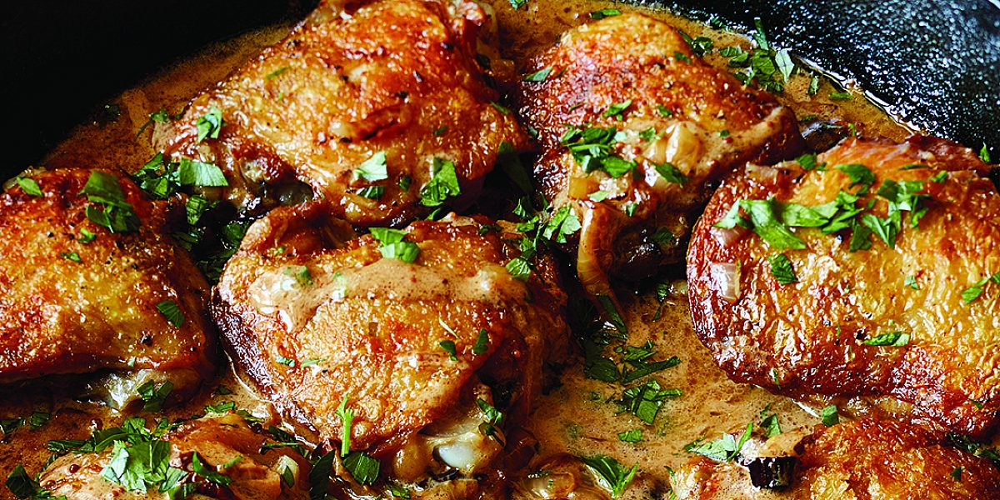

Chicken Thighs with Mustard Sauce

8medium bone-in, skin-on chicken thighs (2¼ pounds)- salt and pepper, to taste
- olive oil
2 cupshalved and thinly sliced yellow onion (2 onions)2 tbspdry white wine8 ouncescrème fraîche1 tbspDijon mustard1 tspwhole-grain mustard- 1 tbsp` chopped fresh parsley
Salt the chicken the day before and leave in fridge in a plastic bag or container.
Place the chicken thighs on a cutting board, skin side up, and pat them dry with paper towels. Sprinkle the chicken with 1½ teaspoons salt and ¾ teaspoon pepper. Turn them over and sprinkle them with one more teaspoon of salt.
Heat 1 tablespoon olive oil in a large skillet over medium heat. When the oil is hot, place the chicken in the pan in one layer, skin side down. Cook over medium heat for 15 minutes without moving, until the skin is golden brown. (If the skin gets too dark, turn the heat to medium low.) Turn the chicken pieces with tongs, add the onions to the pan, including under the chicken, and cook over medium heat for 15 minutes, stirring the onions occasionally, until the thighs are cooked to 155 to 160 degrees and the onions are browned. Transfer the chicken (not the onions) to a plate and allow to rest uncovered while you make the sauce. If the onions aren’t browned, cook them for another minute.
Add the wine, crème fraîche, Dijon mustard, whole-grain mustard, and 1 teaspoon salt to the skillet and stir over medium heat for one minute. Return the chicken, skin side up, and the juices to the skillet, sprinkle with parsley, and serve hot.